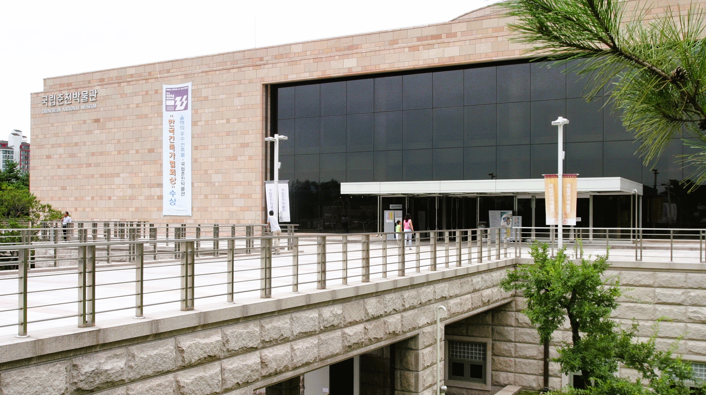
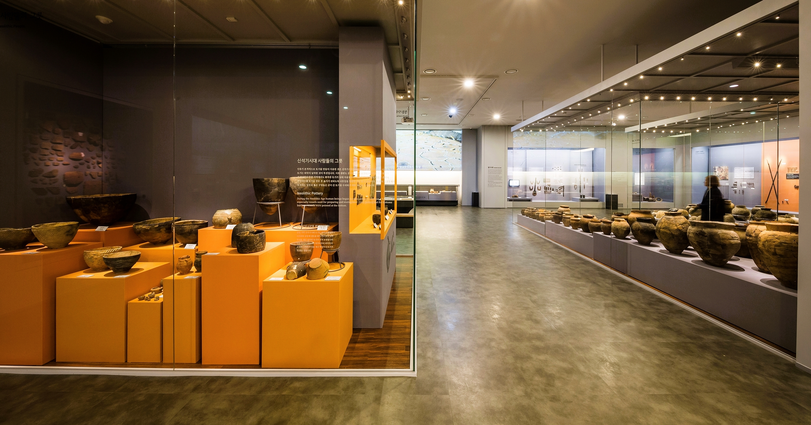
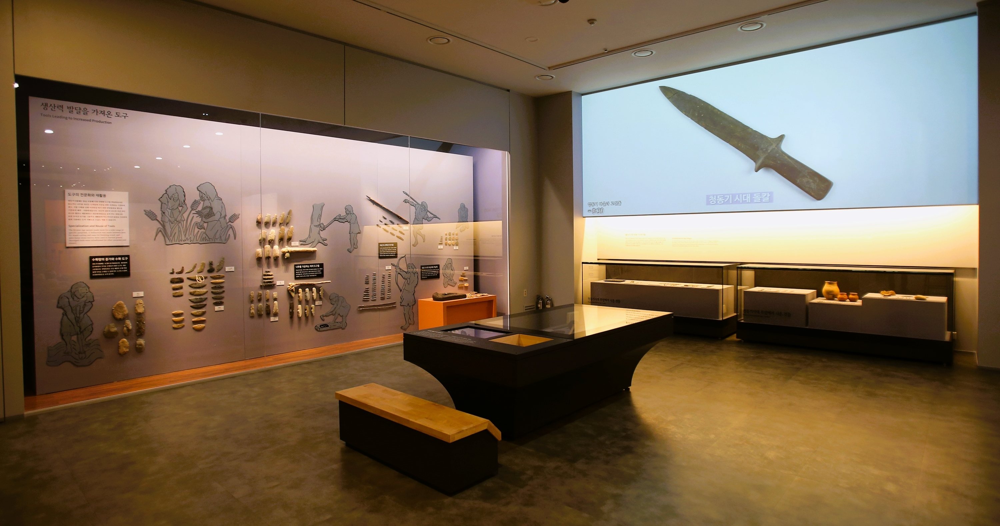
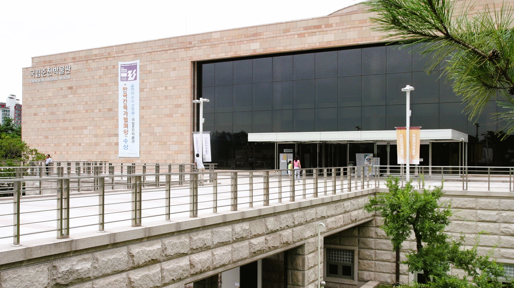
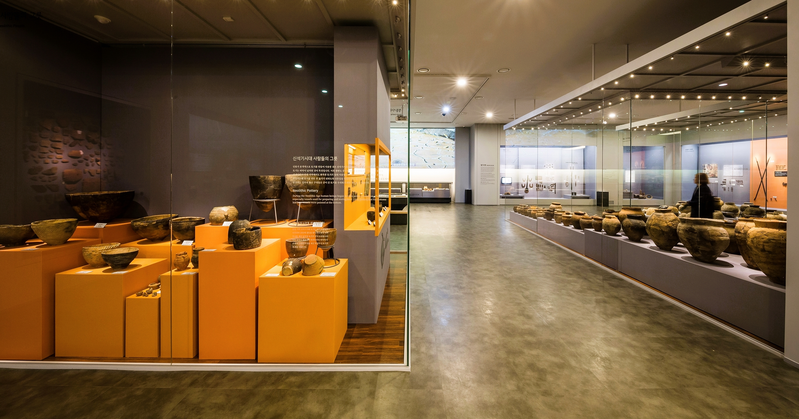
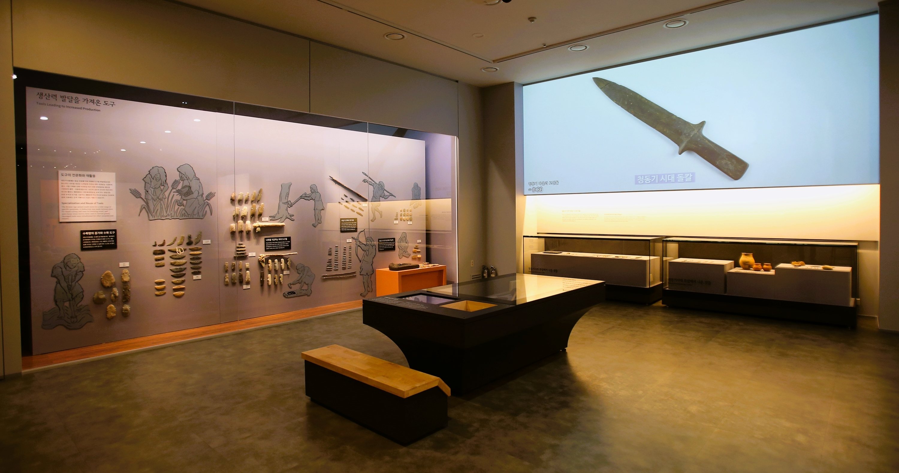

강원 지역 문화의 원형과 특성을 찾고 이를 널리 알리기 위해 2002년 개관한 강원도 대표 박물관이다. 상설전시실, 브랜드실, 기획전시실, 야외 전시실 등의 공간을 갖추고 선사에서 근대까지 강원도의 역사와 문화를 한눈에 살펴보기 좋게 전시하는 한편 다양한 주제별 특별전도 연다.
넓은 주차장과 쉼터가 잘 조성되어 있고, 고급스러운 건축물이 아름다운 곳이다. 상설전시실 이외에도 어린이를 위한 공간도 많고, 도서실, 체험학습실 등을 운영하고 있어서 여러 방문객들의 문화 활동에 기여하고 있다. 정갈한 외관으로 맞이하는 국립춘천박물관의 장엄한 내부는 각종 전시와 휴식공간을 제공한다.
 




